メディカルブルーム減量秘策
メディカルブルームが提案する
プレミアム韓方ダイエットソリューション 減量秘策の種類とプランのご案内
ダイエットの最終目標は
「 健康 」
腸閉塞リスク4.22倍／胃無力症リスク3.67倍／膵炎リスク9.09倍 ダイエット治療薬の副作用増加 「今話題の肥満治療薬W…効果と副作用は？」、ハイドク（HiDoc）、イ・ジンギョン健康医学記者、2024.10.22
ダイエットを成功させるためには、
健康的で
自分の体のためになる 体系的な ダイエットが必要です。
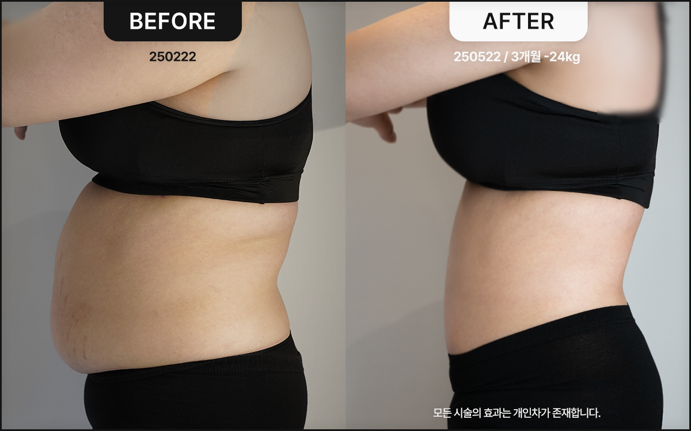

あなたの健康的なダイエットの秘密
メディカルブルーム減量秘策
減量秘策の核心は、根本的な代謝機能を高めて 体の主エネルギー源を脂肪に変える体質改善法です。
この過程で、肥満の原因となる慢性炎症や インスリン抵抗性が改善され、体重は自然に減少します。
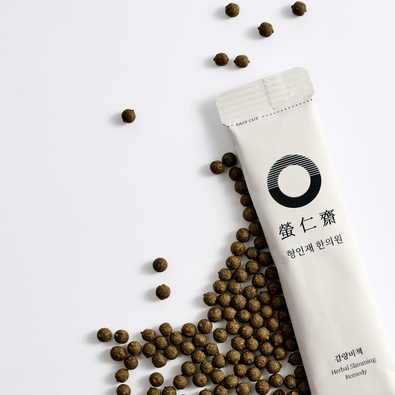
あなたを正確に知るスマートなダイエット
減量秘策
メディカルブルーム減量秘策は1:1オーダーメイドのダイエットプログラムで、 体質に合わせて薬材が変わる、体系的で健康的なダイエットができます。
すべてのプログラムは丸薬と湯薬のセットで構成されます。
気軽に、安全で効果的な、 減量秘策 丸 代謝が落ちた方のための、 減量秘策+ 丸 脂肪分解と慢性炎症の改善、 自分だけの体質に合わせた1:1配合で 減量秘策 湯 鹿茸・熊胆などのプレミアム補薬材で 健康維持と体質の弱点を完璧に補完、 減量秘策 湯プレミアム 体の内側まで健康で美しく、自分への贈り物を
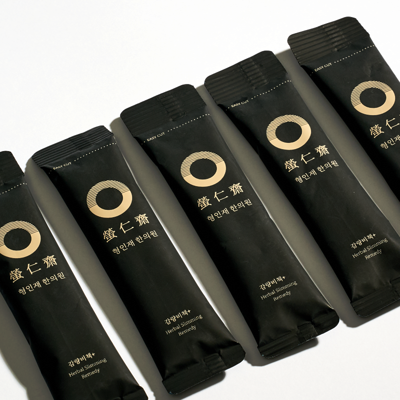
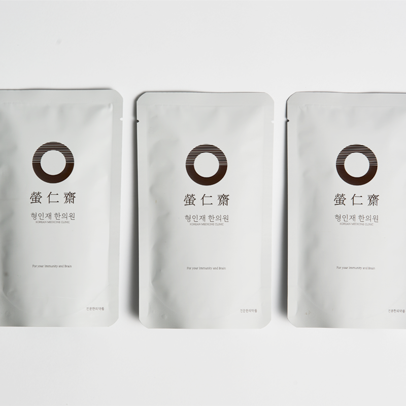
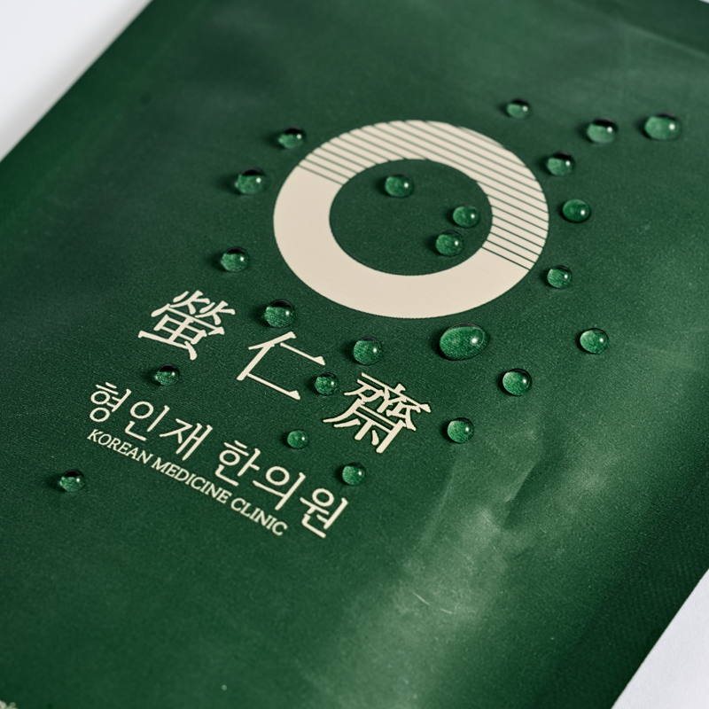
健康的な減量の秘密
減量秘策の代表薬材と効能
麻黄 薏苡仁 熟地黄 エフェドリンという活性成分を含み、代謝量を増加させます。エフェドリンは交感神経系を刺激して心拍数と体温を高め、これにより体内のエネルギー消費が増加します。つまり、基礎代謝率を高めて体脂肪をより多く消費させます。
抗炎症作用で炎症を抑え、免疫システムを強化し、利尿作用によって体内の老廃物排出を助け、むくみを緩和します。また、消化機能を改善して消化不良を解消し、体重管理にも役立ちます。
血液循環を改善して貧血やめまいを緩和し、体の免疫力を強化して感染予防に役立ちます。また、肝機能を保護・改善して解毒作用を促進します。
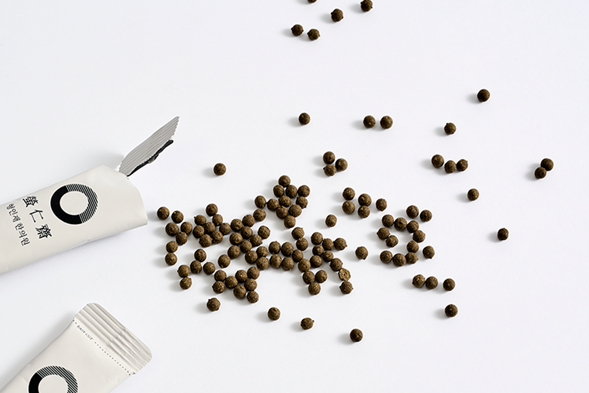
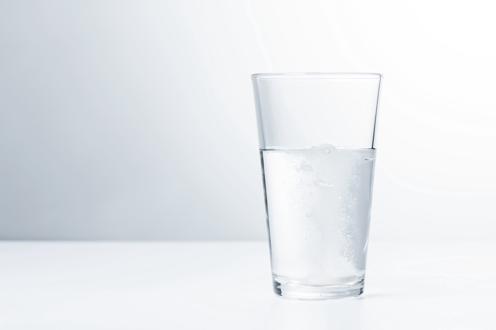
食事が必須のダイエット？
減量秘策の服用方法
STEP 01 プログラム開始前に、同封のデトックス丸で体の中をきれいに空けてください。
牛骨スープや基本的なタンパク質で食事を代替しながら3日間服用します。
STEP 02 処方された減量秘策を1日2回、食前に1包ずつ手軽に服用してください。
食前に飲むと満腹感を与え、胃の容積を減らします。
STEP 03 必ず1日2食以上、おいしい食事を召し上がってください。
減量秘策は新陳代謝を促進し、エネルギーをより上手に、より多く使う体質へと変化させます。
食べ物（エネルギー）を摂取してこそ、体はエネルギーをスムーズに消費する方法を身につけます。
減量秘策の作用プロセス① 新陳代謝の促進、老廃物の排出 減量秘策の作用プロセス② 脂肪分解の加速、むくみの減少 減量秘策の作用プロセス③ エネルギー消費量の高い体質へ変化、 健康的なダイエット体重の維持
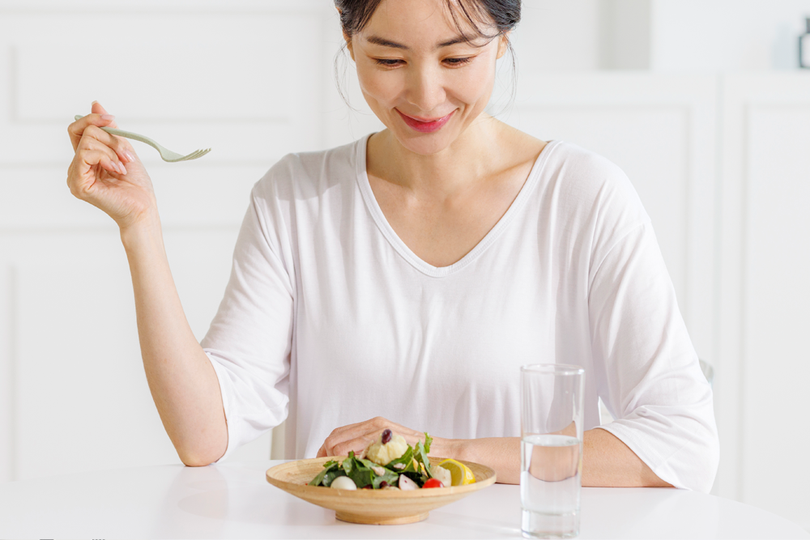
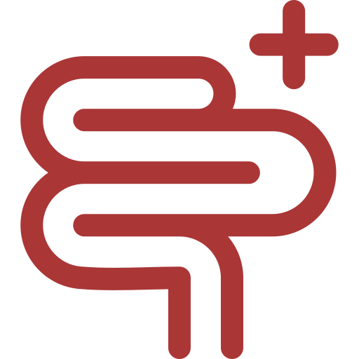
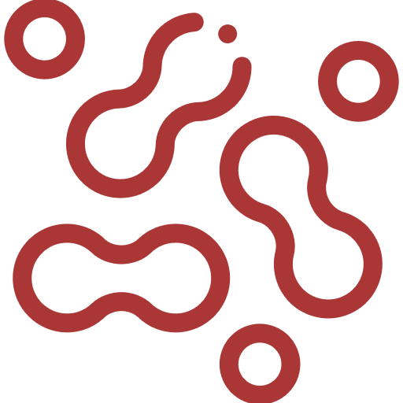
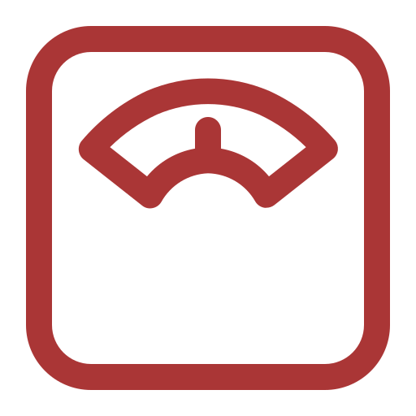
最も健康的なダイエット、
メディカルブルーム韓方医院で始めましょう。
個人の体質・健康状態・環境などに合わせて 韓医師の1:1オーダーメイド診療により処方される韓方医薬品です。
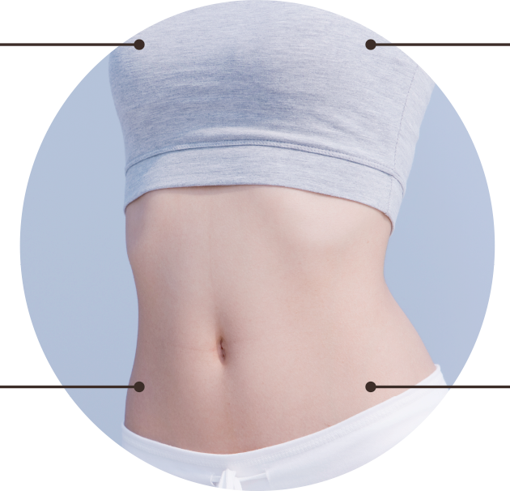
減量秘策の効果
ダイエットの根本目的、
体重減少 些細な健康トラブルまで一度にケア 炎症・むくみの減少 虚弱でただ痩せているだけの体？
免疫力の向上 外も内も余分なものなくすっきりと、 老廃物の排出 消化管や肌肉の痰飲を整理し、慢性炎症や不要な脂肪を燃やします。
体温維持・心拍・呼吸運動など基礎的な生命活動に使うエネルギー自体を大きく増やすため、別途の運動は必須ではありません。
全身の状態を『エネルギー消費が多く、太りにくく、脂肪消費量の大きい』体質へと改善・定着させます。そのため、減量秘策プログラムを終了してもリバウンドがなく、ダイエット成功時の健康と体重を維持できます。
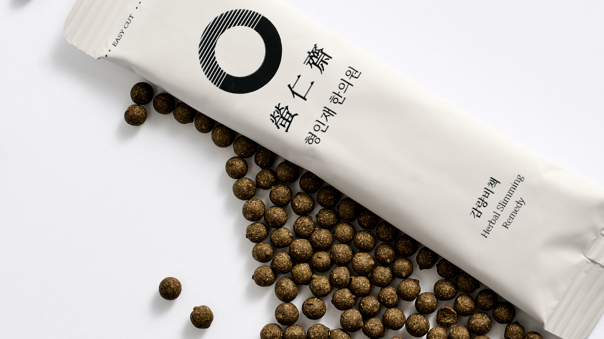
あなたを正確に知るダイエット
メディカルブルーム減量秘策プラン
減量秘策は皆さまの 体質・習慣・減量目標・期間に合わせて3段階でご用意しました。
自分に最も最適化されたダイエットを始めましょう。
ためらいのない減量のスタート、 減量秘策 純 誰でも気軽に始められる手軽なダイエット丸です。
早く健康的な体重減少をサポートし、 食欲抑制の代わりに栄養吸収率と脂肪分解機能を高め、 将来の摂食障害を予防します。
減量秘策 純プログラムは、どなたでも服用できる減量秘策丸薬で構成されます。
カウンセリング後、体質とコンディションに応じて「減量秘策」または「減量秘策+」を処方いたします。
ダイエットと体質改善を同時に 減量秘策 眞 Basic 誰でも気軽に始められる手軽なダイエット丸です。
早く健康的な体重減少をサポートすると同時に、 太りにくい体質への改善によってリバウンドをなくします。
減量秘策 眞Basicプログラムは、減量秘策丸薬と減量秘策湯で構成されます。
カウンセリング後、体質とコンディションに応じて「減量秘策」または「減量秘策+」を処方し、 減量秘策湯は、詳細な体質に合わせたオーダーメイドの韓方薬材のみで構成されます。
自分だけの最高級補薬材で 完璧なヘルスケアをプラスした 減量秘策 眞 Premium 鹿茸・熊胆など自分の体質にぴったり合うプレミアム補薬材を追加し、 ダイエット効果を最大化し、副作用を最小限に抑えます。
体重減少に加え、炎症・むくみなど普段気になっていた さまざまな健康問題を同時にケアできる、 メディカルブルームのプレミアムダイエットプログラムです。
減量秘策 眞Premiumプログラムは、 減量秘策丸薬と減量秘策プレミアム湯で構成されます。
カウンセリング後、体質とコンディションに応じて「減量秘策」または「減量秘策+」を処方し、 減量秘策プレミアム湯は、詳細な体質に合わせた オーダーメイドの最高級韓方薬材のみで構成されます。
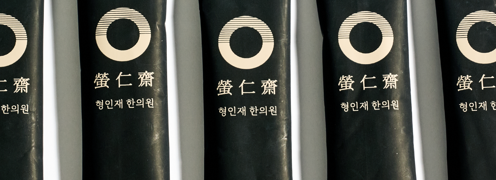
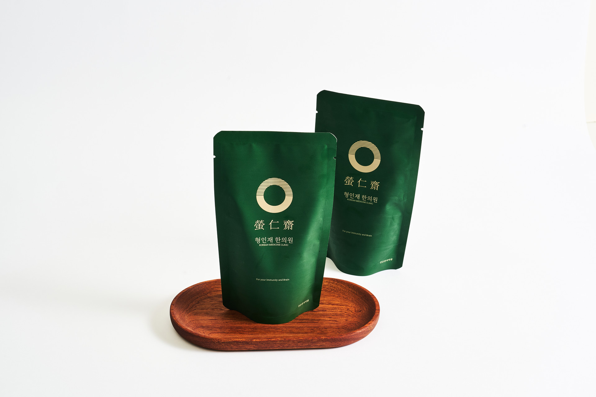
メディカルブルーム減量秘策ダイエット
こんなあなたにおすすめします
□ 飢えるダイエットではなく、健康的なダイエットを望む方 □ ダイエットが必要だけれど、食事を抜くのがつらい方 □ リバウンドが心配で、根本的な体質改善を望む方 □ 体重管理のための運動をする余裕がない方 □ 他のダイエット方法で副作用に悩んでいる方 □ 自分の体に特別な健康を贈りたい方
「あなたの自然なままに」
添加物のない天然韓方薬材そのままの湯薬と丸薬、安心してお召し上がりください。
自分が飲む韓方薬だから、
あなたが召し上がる補薬だから。
メディカルブルームの減量秘策韓方薬は、 体質に合わせて、肝臓や心臓に負担がかからないようにします。
色素や人工添加物を含まない天然韓方薬材で、 食品医薬品安全処（MFDS）が認証した医薬品のみを韓方薬材として使用します。
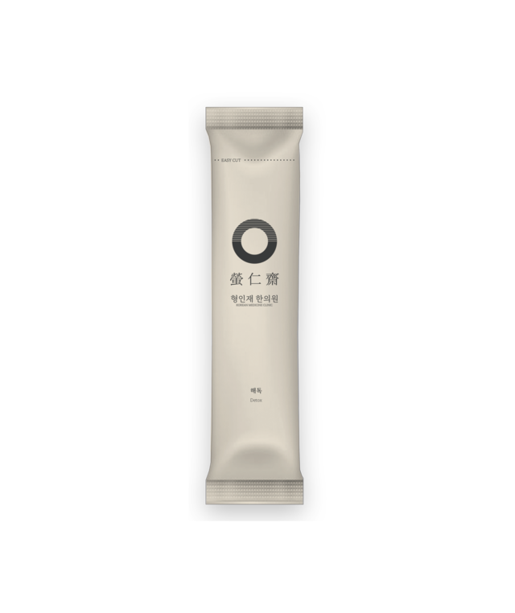
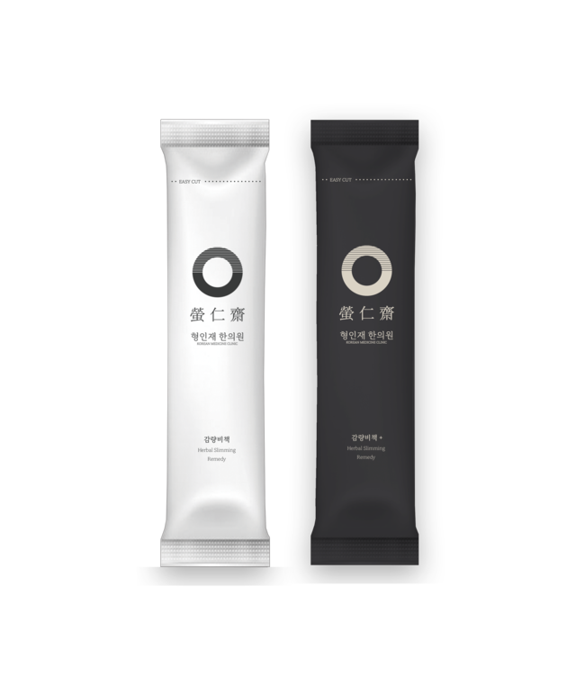
自分に必要なダイエット方法、
一度にご確認ください
デトックス丸 体内の汚染物質を解毒・排出し、 軽やかな毎日のために&ダイエットの事前準備 減量秘策 順 気軽に始めるダイエット、 体重減少に集中した基本プログラム 減量秘策 眞 Basic 体重減少から始めて、 太りにくい体質づくりで仕上げるまで 減量秘策 眞 Premium 鹿茸・熊胆など最高級補薬材を追加して、
さらに特別になったダイエット
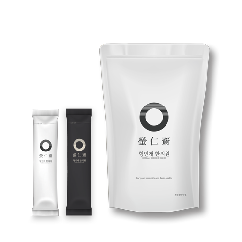
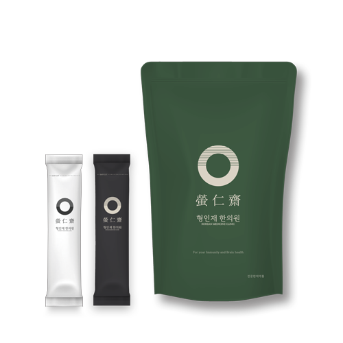

それでも迷ったら、
院長に直接ご相談ください！
最も健康的な美しさをお届けする
メディカルブルーム韓方クリニックの約束
1:1肌コンディション＆デザインカウンセリング
院長との十分なカウンセリングを通じて、お悩みの部位や肌のコンディション、肌質を丁寧にチェックします。 お客様が求める美しさとお顔の状態をすべて考慮し、最適なパーソナルフェイスデザインをご提案いたします。
韓方医院長2人による
特別な専任ケア
カウンセリングから施術まで、家族や大切な人の肌だと思い、誰よりも丁寧できめ細やかにケアします。 肌の美容に韓方医学の視点を取り入れ、血脈と筋肉への刺激を加えることで、健康と美しさの両方を実現します。
副作用のない健康的な美しさ
お客様の肌の健康と満足度を何よりも大切にしています。 施術後のつらい副作用が起きないよう、検査とカウンセリングの段階に万全を期し、薬鍼と韓方薬の原料には体にやさしい天然韓方生薬のみを使用しています。
正規プレミアム機器と
適正量の施術
メディカルブルームがお客様に使用する機器と薬剤はすべて正規品で、お顔に多すぎず少なすぎない、オーダーメイドの適正量のみで施術いたします。
Medical Bloom Korean Medicine Clinic